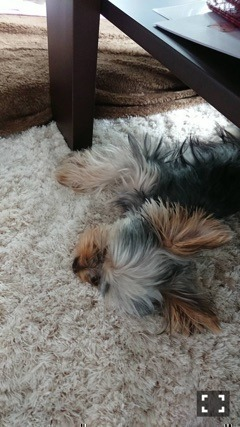

| 2017/07 27 Thu | ひめたん-0o0-その721 |
わしらの声は、届くかのぉ
～被爆者75歳、NYへ行く～
テレビ新広島8/6 14:00～14:55、
フジテレビ系列25局で随時放送
ナレーションを担当させて頂きました。
広島市民、被爆3世として
これほど名誉なことはありません。
このお仕事をしているからこそ
発信することができると思うので
少しだけ語らせてください。
広島の小中学生は
夏休み中の8月6日が登校日なんですね。
朝黙祷を捧げて、
それから平和学習をするのですが
全国共通の文化だとてっきり思ってて。
でもそんなことはなくて
最近の若い世代の人たちはやはり
そんなに考える機会がないと聞きます。
高校生の頃、修学旅行で
長崎の平和祈念資料館を訪れました。
皆さんにも広島や長崎に行く
機会があれば一度足を運んで頂きたいです。
実際に見て、触れて、
初めて感じるものがあると思います。
教科書で見るのとは随分印象が違います。
この番組が皆さんにとって
改めて平和について
考えるきっかけになれたら幸いです。
お久しぶりの更新になってしまい
すみません( >_< )
まずはアルバム個握
きてくださった皆様ありがとうございました
生誕祭もやって頂きました！
東京会場、3部以降
欠席させてしまい本当にすみませんでした。
うーん、京都会場でもお話ししましたが
やはり当たり前になってはいけないと
最近は何に対しても思います。
会えること、お話しできること、
こうして日々お仕事できること、
全部運命なのかなぁと。
なので自分に与えられた出会い、使命、
そういったものを大切に
21歳も頑張ろうと感じたのでした。
さて、「逃げ水」ジャケ写
公開になりましたね！
写真を貼る！！！

蘭世との写真、動画っぽいけど写真。
それから、沈金で解禁されました
18thアンダー曲「アンダー」
聴いていただけましたか？
歌詞がグサッと刺さります、
私たちのことを謳った曲になりました。
誰かに言われた
あなたの人生はどこにあるの？
当たっていない スポットライト
個人的にはこの部分凄いグッとくる。
体感としてやはり武道館アンダーライブが
熱くて今でも忘れられません。
18thはこの曲を提げて頑張ります！

最近、色んなとこで
寝れるようになったモニしゃん。
子犬の頃はチョロチョロ動き回って
それどころじゃなかったのに
落ち着いてきました～＊
～お知らせ～
MAGAZINE
8/16 FLASHスペシャル
TV
8/6他
わしらの声は、届くかのぉ
～被爆者75歳、NYへ行く～
（ナレーション）
次回のらじらー！ゲストは
桜井玲香ちゃんです！
メール待ってまーす☆
(＊´・ω・＊)
コメント(1354)
2017/07/27 21:00